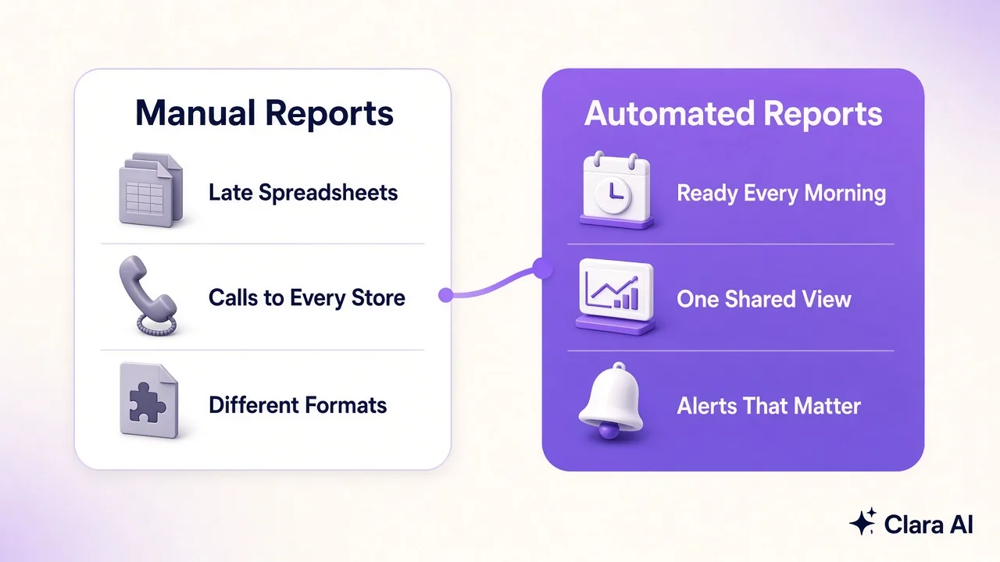
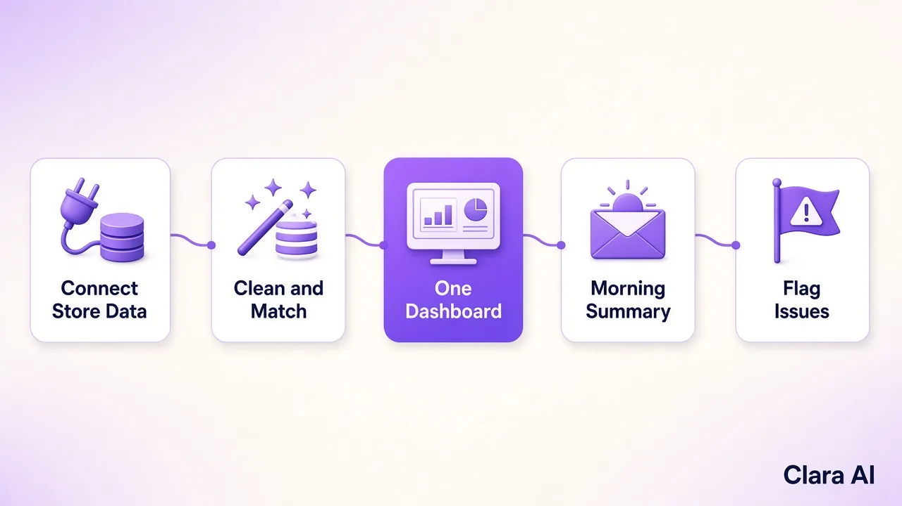

Daily sales report automation connects your point-of-sale, ERP and spreadsheets, cleans and matches the figures, and sends one morning summary of every store by email or WhatsApp. It flags stores and products that need attention, so owners decide on today's numbers, not yesterday's guesses. People still review and act.
It is 8:40 on a Monday morning in Birmingham. The owner of a home-furnishings chain has had one store manager's figures by phone, another's in a spreadsheet and a third's as a photograph of a printed sheet sent on WhatsApp. Two stores have not reported yet. One report uses last week's product names. She cannot tell whether a quiet weekend in one store was a real dip or a late report.
This article is for owners of established multi-store and multi-branch retail and distribution businesses who do not have a data team. It explains how daily sales report automation works, what you see each morning and where your people stay in charge.
Each store reports in its own way. Figures come from tills, stock systems and the manager's own spreadsheet. Someone has to collect them, retype them and combine them.
That creates three problems.
The cost is mostly time and missed signals, and it is easy to underestimate.
Time goes first. The owner, or a trusted manager, spends part of every morning chasing stores and checking totals instead of acting on them. That is skilled time spent on collecting.
The missed signals matter more. A product that sells out in one store but sits in another goes unnoticed for days. A store that is slipping looks like the rest until the end-of-month figures. A promotion that is not working keeps running. None of these is dramatic on its own, but together they shape the quarter.

It replaces the collecting with a fixed routine that runs every day.

One note on WhatsApp. A business can message freely for 24 hours after the person's last message. After that, it can send only pre-approved templates. A daily summary is therefore set up as an approved template, or the owner's reply keeps the window open.
A good morning summary is short enough to read over coffee. It shows:
Behind the summary, the dashboard lets the owner open any store and see the detail. Because every store is measured the same way, the comparison is fair.
Over a few weeks, the same view builds a useful record. The owner can compare this Monday with last Monday, see which stores recover quickly after a slow day and spot products that sell well together. That history turns the daily report from a chore into a planning tool, without anyone retyping a single figure.
The automation collects and flags. People decide.
The dashboard shows patterns in operations. It is not built to rank individual staff.
A short list gets a first version moving.
They can, once the daily report is in place.
An operations intelligence dashboard is the base. From there, the same data can drive other work. A custom AI agent can chase a store that has not reported, or draft the explanation behind a flag. An AI chatbot can let store managers ask a plain question, such as which products are low in their store, and get an answer. An AI calling agent can follow up customer enquiries and write the outcome back, so enquiry data reaches the same dashboard as sales.
None of this is needed on day one. Most businesses start with the daily report. For the wider idea, see our guide to an operations intelligence dashboard for multi-branch retail.
Clara AI built a "Virtual AI CEO" dashboard for Nilkamal Sleep, a retail network in India, that gives leadership one daily view of the business. Clara AI also builds calling agents for Vijay Sales, an electronics retail chain. Clara AI works with clients across India and the Gulf and is now working with companies in Europe. Every build is shaped around the client's own systems and stores. See our client work.
Clara AI builds, deploys and manages daily reporting dashboards in six steps. Clara AI's chatbots and calling agents work in English and Hindi.